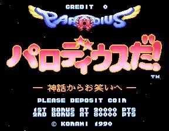

FBA (FinalBurn Alpha)
Parodius DA!
- Año: 1990
- Desarrollador: Konami
- Género: Disparos / Vuelo horizontal
- Jugadores: 2 jugadores
- A dos: por turnos
Matamarcianos cómico de Konami que parodia Gradius: con un pulpo, un pingüino, TwinBee o la nave Vic Viper, hay que recorrer diez fases disparatadas para vencer al Gran Pulpo. Mejoras como en Gradius, campanas de TwinBee y música clásica.
Controles
Un botón: A y R no hacen nada. Al empezar se elige el modo (AUTO, SEMIAUTO o MANUAL). El marcador de abajo marca la mejora al coger campanas o cápsulas. Dos jugadores por turnos.
| Panel | Juego |
|---|---|
 | Disparar |
  | Empezar |
 | Meter una moneda |
+  | Salir del juego |
El panel en FBA (FinalBurn Alpha)

Argumento
El Gran Pulpo amenaza la Tierra, y los héroes recorren el mundo para encontrarlo y destruirlo. Es una parodia de Gradius, con personajes de varias series de Konami.
Final: la última fase es la fortaleza de Zeo, en un planeta desconocido.
Fuentes
Jugabilidad
- Tipo de juego: matamarcianos horizontal y cómico de Konami (1990), para 1 o 2 jugadores por turnos. Nació como parodia de su propia saga Gradius, con un estilo gráfico muy suyo: en vez de la nave clásica se puede pilotar un pulpo o un pingüino. Estructura en «Guía de niveles».
- Mejoras como en Gradius: algunos enemigos destruidos dejan cápsulas; cada una avanza un paso la barra de abajo (el «medidor de poder»). En modo MANUAL, R «compra» cuando quieras la mejora iluminada y la barra vuelve a empezar. En AUTO se aplican solas.
- Cuatro personajes, cada uno con las armas de otro juego: Vic Viper (Gradius), el pulpo (Salamander), TwinBee y Pentarou (Gradius II).
- Campanas: como en TwinBee, dan poderes de un solo uso (acabar con todo lo de la pantalla, rayos enormes…).
- Enemigos: mezcla de enemigos y escenarios de Gradius y TwinBee con muchos rivales de estilo anime (algunas chicas ligeras de ropa) y rarezas como una bailarina del vientre gigante o una criatura mitad gato y mitad barco.
- Música: casi toda es clásica versionada (Strauss, Chaikovski, Rossini, Beethoven…).
Fuentes
Guía de niveles
Son 10 fases:
| Fase | Lugar | Jefe |
|---|---|---|
| 1 | Planeta pirata | Capitán Penguinovski III |
| 2 | Planeta de Las Vegas y el circo | Eagle Eagle Sabnosuke |
| 3 | Fortaleza de caramelo en el espacio | Hot Lips |
| 4 | Planeta volcánico japonés | Pig Tide |
| 5 | Acorazado de moáis | Yoshiko |
| 6 | Planeta pinball | Viva Core |
| 7 | Nubes rosas, chicas y burbujas | Honey Mikayo |
| 8 | Cueva de hielo alienígena | Pooyan, un pez globo gigante |
| 9 | Cementerio de fantasmas con lago de lava | Iron Maiden MK III y Yoshiwara Dayuu |
| 10 | La fortaleza de Zeo |
Fuentes
Objetos
| Objeto | Qué hace |
|---|---|
| Cápsula | Avanza la barra de mejoras de abajo |
| Campana | Poder de un solo uso |
Fuentes
Trucos y secretos
Recopilado de internet (2026-11-02). Lo marcado con ⚠️ no está probado en la bartop.
Secretos
⚠️ No he encontrado secretos ni trucos de la recreativa en las fuentes consultadas.
Fuentes
Longplay

Partida completa de la recreativa (42 min), de AL82 Retrogaming Longplays: Parodius Longplay (Arcade) [QHD].
Pulsa el minuto de un nivel para ver el vídeo desde ese punto.
Fases
| Fase | Momento |
|---|---|
| Fase 1 | Planeta pirata ▶ 3:14 |
| Fase 2 | Las Vegas y el circo ▶ 6:01 |
| Fase 3 | Fortaleza de caramelo ▶ 9:44 |
| Fase 4 | Planeta volcánico ▶ 13:22 |
| Fase 5 | Acorazado de moáis ▶ 16:46 |
| Fase 6 | Planeta pinball ▶ 20:18 |
| Fase 7 | Nubes rosas ▶ 23:17 |
| Fase 8 | Cueva de hielo ▶ 27:15 |
| Fase 9 | Cementerio ▶ 31:15 |
| Fase 10 | Fortaleza de Zeo ▶ 35:18 |
| Final | Final ▶ 38:03 |